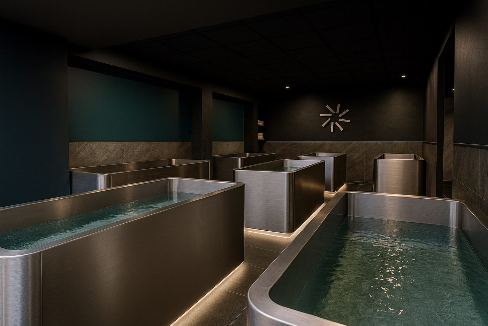
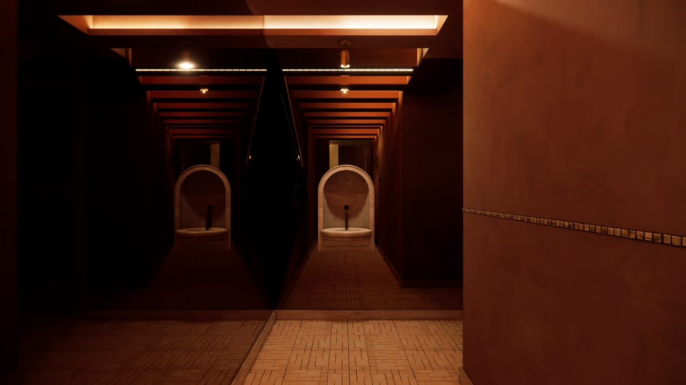
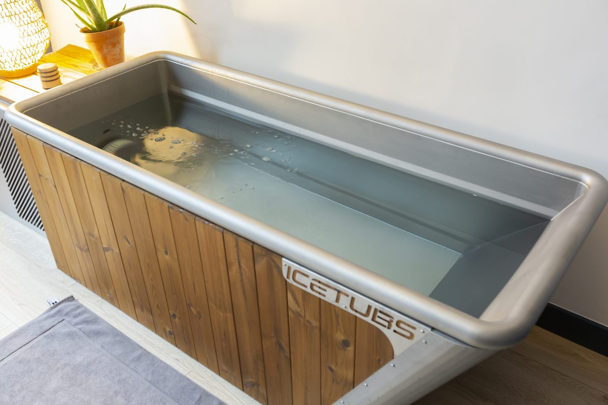

Spas avec bain froid à Paris : 5 adresses testées, toutes sous 100 €
Sept bains à 3 °C dans un ancien bureau de poste du 9e, le plus grand sauna de
France face aux Tuileries, un bassin finlandais annoncé à -4 °C dans le 17e.
Températures relevées, tarifs vérifiés, et le défaut de chaque adresse.
Par Swann Bertaud, rédacteur hôtellerie de luxe✺Publié le 28 juillet 2026✺14 min de lecture

Les sept bains froids du Re-Set Club, rue Laffitte, maintenus entre 3 et 10 °C. Photo Re-Set Club.
TL;DR : l'essentielLe podium du froid parisien
Sant Roch, 1er, 9,2/10 :
le plus grand sauna de France et cinq bains à 3-8 °C, 45 € la séance.
Re-Set Club, 9e, 8,7/10 :
sept bains, trois formats au choix, 39 € la séance, le meilleur rapport qualité-prix.
Paris Ice Club, 9e, 8,3/10 :
le seul lieu parisien dédié à la méthode Wim Hof, 99 € la découverte.
Aucune séance ne dépasse 100 €. C'est la surprise de ce
comparatif : là où un soin de palace parisien démarre à 200 €, le bain froid se pratique
entre 38 et 99 €. Le prix ne fait pas le classement, la qualité du protocole si.
Pourquoi le bain froid s'impose dans les spas parisiens
Le bain froid n'est pas une mode passagère. C'est une pratique de récupération, remise au
goût du jour par la méthode Wim Hof et par la vogue de l'hormèse, ce principe selon lequel une
contrainte brève et contrôlée renforce l'organisme. L'immersion dans une eau entre 3 et 10 °C
déclenche une vasoconstriction suivie d'une vasodilatation au réchauffement, et sollicite le
système nerveux autonome. Les spas parisiens l'ont intégrée dans des protocoles de
thérapie par contraste, l'alternance sauna et bain froid, dans l'esprit des
banyas russes.
Trois techniques coexistent à Paris : le bain froid par immersion, la cryothérapie sèche en
cabine, et la douche froide contrastée. Chacune a ses vertus, et elles ne s'adressent pas au
même public.
Technique
Température
Durée
Effet principal
Prix moyen à Paris
Bain froid
3 à 10 °C
1 à 3 min
Récupération musculaire, clarté mentale
38 à 99 €
Cryothérapie sèche
-110 °C
2 à 3 min
Récupération rapide, effet anti-inflammatoire
60 € et plus
Douche froide contrastée
5 °C / 40 °C alternés
5 à 10 min
Circulation, tonification, accessibilité
Gratuit, à domicile
Donnée propriétaire LMHS n°1 : l'écart de température entre
les cinq adresses testées atteint 14 °C, et il change tout. Sant Roch tient ses
bains entre 3 et 8 °C, Re-Set Club entre 3 et 10 °C, M-Yoga laisse le baigneur choisir entre 3
et 10 °C, tandis que NeurøRecup annonce une eau à -4 °C, rendue possible par un dispositif
finlandais Avantopool. Cette variation conditionne directement la durée d'immersion tolérable :
trois minutes à 8 °C n'ont rien à voir avec trois minutes sous zéro.
Les 5 adresses, du meilleur au dernier
01

Sant Roch 9,2/10
Paris 1er, 4-8 rue Saint-Roch, face au jardin des Tuileries.
45 € la séance. Ouvert tous les jours de 8 h à 22 h. Réservation obligatoire.
Sant Roch est un sanctuaire de 400 m² sur deux niveaux, ouvert en mars
2026. Il abrite le plus grand sauna de France, plus de 60 m² traités comme
une salle de spectacle : lumière travaillée, playlists immersives, aromathérapie. En face,
cinq bains maintenus entre 3 et 8 °C. Le contraste est brutal et c'est le
sujet : on passe de la chaleur sèche à l'eau glacée en quelques secondes, plusieurs fois
dans la séance, selon le principe des banyas.
Le décor n'est pas accessoire. Terre cuite, briques posées en chevrons, fontaines sous
arcades, éclairage bas : le lieu impose un rythme lent, à l'opposé d'une salle de sport avec
un bac réfrigéré dans un coin. C'est ce qui lui vaut la première place.
Le bémol LMHS : la réservation est obligatoire, sans passage à
l'improviste, et les créneaux du week-end partent vite. L'établissement ne publie pas le
détail de ses formats ni la température de son sauna, ce qui oblige à téléphoner pour
savoir exactement ce que l'on achète.
Paris 1er · 400 m² sur deux niveaux · Plus grand sauna de France, plus de 60 m² · 5 bains à 3-8 °C · Ouvert en mars 2026 · 8 h-22 h, 7 j/7 · Indice Accessibilité 5/5 · Séance 45 €
02
Re-Set Club 8,7/10
Paris 9e, 5 rue Laffitte. À partir de 39 € la séance.
Ouvert tous les jours de 7 h 30 à 22 h. Réservation obligatoire.
Re-Set Club occupe un ancien bureau de poste de 400 m² transformé en
club de thérapie par contraste. L'équipement est le plus complet du classement :
sept bains froids de deux places entre 3 et 10 °C, un
sauna de 50 m², des douches et un espace commun avec station
d'hydratation.
Trois formats structurent la séance. Re-Boost, guidé, se termine par le
froid pour repartir en éveil. Re-Lax, guidé, se termine par le chaud pour
repartir apaisé. Free-Flow laisse composer son propre parcours. À 39 € la
séance, avec un pack de cinq séances à 150 € l'été 2026, c'est le meilleur rapport
qualité-prix parisien.
Le bémol LMHS : aucun soin annexe, ni massage ni gommage, et une
ambiance de club urbain qui assume la conversation plutôt que le silence. Ceux qui viennent
chercher le recueillement d'un spa d'hôtel seront décontenancés.
Paris 9e · Ancien bureau de poste de 400 m² · 7 bains à 3-10 °C · Sauna de 50 m² · Trois formats, guidés ou libre · 7 h 30-22 h, 7 j/7 · Indice Accessibilité 5/5 · Séance dès 39 €
03
Paris Ice Club 8,3/10
Paris 9e, 32 rue de Trévise. Séance découverte 1 h 30 à
99 €, session privatisée à 119 € par personne, de 6 à 12 participants. Sur rendez-vous.
Paris Ice Club est le premier lieu parisien entièrement dédié aux bains de
glace, et le seul du classement à construire toute son offre autour de la
méthode Wim Hof. Sa fondatrice, Caroline Arditti, a été
formée directement par Wim Hof.
La séance suit trois temps : un exposé sur les mécanismes du froid, une
respiration guidée d'environ une heure qui prépare le corps, puis
l'immersion, brève, autour de deux minutes dans une eau de 4 à 10 °C. Le protocole
respiratoire est ce qui distingue vraiment la maison : il transforme le choc thermique en
exercice maîtrisé. La dimension collective fait le reste.
Le bémol LMHS : c'est l'adresse la plus chère du comparatif, 99 € la
découverte, pour deux minutes d'immersion effective. Le format collectif et l'horaire fixe
excluent ceux qui veulent passer vingt minutes seuls dans l'eau, et l'infrastructure n'a
rien d'un spa équipé.
Paris 9e · Premier lieu parisien dédié aux bains de glace · Méthode Wim Hof · Fondatrice Caroline Arditti, formée par Wim Hof · Respiration guidée puis immersion de 2 min à 4-10 °C · Indice Accessibilité 4/5 · Découverte 99 €
04

M-Yoga 7,8/10
Boulogne-Billancourt, 14 boulevard Jean-Jaurès, aux portes de Paris.
38 € la séance solo de 20 minutes, 50 € la séance guidée de 45 minutes. Packs de dix
séances à 290 € et 430 €.
Seule adresse du comparatif située hors de Paris, et nous le signalons plutôt que de le
masquer : M-Yoga est à Boulogne-Billancourt, en limite du 16e. Le bain froid y
est réglable de 3 à 10 °C, ce qui est unique dans cette sélection : chacun
choisit son intensité au lieu de subir celle du lieu.
L'autre singularité est l'écosystème. Le bassin est installé dans un
studio de yoga : on enchaîne un cours chaud, une douche, l'immersion
froide, le réchauffement. La thérapie par contraste devient un prolongement naturel de la
pratique. La première séance est obligatoirement guidée, pour des raisons
de sécurité, avant tout accès en autonomie.
Le bémol LMHS : ce n'est pas Paris, et ce n'est pas un spa. Pas de
sauna dédié au parcours de contraste, pas d'ambiance de bains : un bassin dans un studio,
efficace et sans mise en scène. Vingt minutes en solo, c'est aussi le format le plus
court.
Boulogne-Billancourt, aux portes du 16e · Bain réglable de 3 à 10 °C · Intégré à un studio de yoga · Première séance obligatoirement guidée · Packs de 10 séances · Indice Accessibilité 4/5 · Séance dès 38 €
05
NeurøRecup 7,4/10
Paris 17e, 42 bis rue Cardinet. 45 € la séance, pack de dix
à 430 €, pack de vingt à 800 €. Réservation recommandée.
NeurøRecup pousse le curseur thermique le plus loin du comparatif : le centre annonce une
eau à -4 °C, obtenue avec un bain Avantopool, un
équipement finlandais de dernière génération. L'immersion dure une dizaine de minutes, dans
une logique de récupération musculaire plutôt que d'expérience sensorielle.
L'approche est minimaliste et clairement orientée sport : pas de rituel, pas de sauna,
pas de mise en scène. On vient chercher un effet, on repart. Le lieu est adossé à un
cabinet de chiropraxie, ce qui explique cette orientation.
Le bémol LMHS : la température annoncée sous zéro est une donnée de
l'établissement, que nous n'avons pas pu recouper avec un relevé indépendant, et une eau
liquide à -4 °C suppose un dispositif particulier. Pour le reste, l'absence d'encadrement
et de parcours chaud-froid en fait la moins complète des cinq adresses.
Paris 17e · Bain Avantopool, technologie finlandaise · Température annoncée à -4 °C par l'établissement · Immersion d'environ 10 min · Orientation récupération sportive · Indice Accessibilité 4/5 · Séance 45 €
Le tableau : 5 adresses, températures et tarifs
Rang
Adresse
Secteur
Température
Séance dès
Format
Score LMHS
01
Sant Roch
Paris 1er
3-8 °C
45 €
Sauna et bains, libre ou guidé
9,2/10
02
Re-Set Club
Paris 9e
3-10 °C
39 €
Guidé ou autonome
8,7/10
03
Paris Ice Club
Paris 9e
4-10 °C
99 €
Collectif guidé, Wim Hof
8,3/10
04
M-Yoga
Boulogne
3-10 °C
38 €
Solo ou guidé
7,8/10
05
NeurøRecup
Paris 17e
-4 °C annoncés
45 €
Autonome
7,4/10
Lecture des tarifs : prix d'entrée pour une séance à l'unité,
relevés sur les sites officiels en juillet 2026, hors packs et abonnements. Le pack de cinq
séances à 150 € du Re-Set Club était une offre d'été au moment du relevé, à vérifier avant de
réserver.
Notre méthode : le Score Récupération LMHS
Le Score Récupération LMHS, sur 10, pondère quatre critères à parts égales.
Température réelle de l'eau. Relevé au thermomètre de précision
(± 0,5 °C) à mi-profondeur du bassin, en début et en fin de séance. L'écart entre la
température annoncée et la température constatée mesure la qualité du contrôle thermique.
Encadrement. Qualité de la guidance sur la respiration, le temps
d'immersion et la progression, clarté des consignes de sécurité, présence humaine.
Rapport qualité-prix. Tarif rapporté au temps d'immersion effectif,
existence de packs, transparence de la grille.
Accessibilité aux non-membres. Facilité de réservation, amplitude
horaire, absence de frais cachés, accueil des débutants. C'est ce critère que reprend
l'Indice Accessibilité, noté sur 5.
Ne convertissez pas nos notes. Le Score Récupération sur 10 est
propre à ce comparatif de bains froids. Il ne se convertit ni avec le Protocole LMHS sur 20 de
notre palmarès national, ni avec
la grille Destination sur 10 de nos palmarès régionaux. Le détail figure sur notre
page méthode.
Bain froid ou cryothérapie : lequel choisir
Le bain froid, immersion entre 3 et 10 °C pendant une à trois minutes,
refroidit les tissus en profondeur. La sensation est intense et immédiate. Comptez 38 à 99 € à
Paris. À privilégier pour la récupération musculaire, la clarté mentale, et pour qui cherche
une expérience sensorielle marquante.
La cryothérapie sèche, exposition à un air à -110 °C pendant deux à trois
minutes, agit surtout en surface. La sensation est paradoxalement plus supportable, l'air sec
ne conduisant pas la chaleur comme l'eau. Comptez 60 € et plus. À privilégier après un
entraînement, ou quand l'immersion rebute.
La douche froide contrastée, alternance de 5 °C et 40 °C sur cinq à dix
minutes, se pratique chez soi, gratuitement. L'effet est plus modeste mais la régularité fait
le résultat. C'est la porte d'entrée la plus simple.
Notre verdict : pour débuter, le bain froid en établissement, parce que
l'encadrement et la sécurité valent leur prix. Pour récupérer vite après le sport, la
cryothérapie sèche. Pour installer une habitude durable, la douche froide contrastée à domicile,
en complément.
Quelle adresse pour quel profil
Première fois :Paris Ice Club pour la
pédagogie et la respiration guidée, ou Re-Set Club en format
Re-Lax, qui se termine par le chaud.
Expérience complète :Sant Roch, pour le
contraste entre le plus grand sauna de France et cinq bains à 3-8 °C.
Budget maîtrisé :M-Yoga à 38 € et
Re-Set Club à 39 €, les deux seules adresses sous 40 €.
Récupération sportive :NeurøRecup pour
l'immersion longue, ou M-Yoga après un cours chaud.
Quel est le meilleur spa avec bain froid à Paris ?
Sant Roch, dans le 1er arrondissement, avec 9,2/10 au Score Récupération LMHS.
Il combine le plus grand sauna de France, plus de 60 m², et cinq bains maintenus entre 3 et
8 °C, pour 45 € la séance. Re-Set Club (8,7/10) offre le meilleur rapport qualité-prix à 39 €,
et Paris Ice Club (8,3/10) est le seul lieu parisien dédié à la méthode Wim Hof.
Combien coûte une séance de bain froid à Paris ?
De 38 à 99 € selon l'adresse et le format, d'après nos relevés de juillet 2026. M-Yoga est
le moins cher avec 38 € la séance solo, devant Re-Set Club à 39 €, puis Sant Roch et NeurøRecup
à 45 €. Paris Ice Club, à 99 € la découverte d'une heure trente, ferme la marche. Aucune de ces
cinq adresses ne dépasse 100 € la séance.
Quelle est la différence entre bain froid et cryothérapie ?
Le bain froid est une immersion dans une eau de 3 à 10 °C pendant une à trois minutes : il
refroidit les tissus en profondeur et la sensation est intense. La cryothérapie est une
exposition à un air sec à -110 °C pendant deux à trois minutes : elle agit surtout en surface
et paraît plus supportable, l'air conduisant moins bien la chaleur que l'eau. À Paris, le bain
froid coûte 38 à 99 € la séance, la cryothérapie 60 € et plus.
Le bain froid est-il dangereux, et quelles sont les contre-indications ?
Pour une personne en bonne santé et dans un cadre encadré, l'immersion brève ne présente pas
de risque particulier. Les contre-indications sont en revanche réelles : troubles cardiaques,
hypertension non contrôlée, antécédents d'accident vasculaire cérébral, épilepsie, syndrome de
Raynaud, grossesse. Ne jamais pratiquer après avoir bu de l'alcool, ni seul lors des premières
séances. En cas de doute, demandez l'avis de votre médecin avant toute immersion : ce guide est
éditorial et ne remplace pas un avis médical.
Comment se préparer à son premier bain froid ?
Commencez par une séance guidée : Sant Roch, Re-Set Club et Paris Ice Club en proposent, et
M-Yoga l'impose pour la première fois. Suivez les consignes de respiration, entrez
progressivement en commençant par les pieds, et restez trente secondes à une minute la première
fois. Respirez lentement plutôt que de bloquer votre souffle. Sortez dès l'inconfort marqué,
réchauffez-vous progressivement, hydratez-vous. La deuxième séance sera nettement moins
éprouvante que la première.
Peut-on faire un bain froid à Paris sans abonnement ?
Oui, les cinq adresses acceptent la séance à l'unité. La réservation est obligatoire partout,
sauf chez NeurøRecup où elle est seulement recommandée. Pour une pratique régulière, les packs
reviennent moins cher : cinq séances à 150 € au Re-Set Club à l'été 2026, dix séances à 430 €
chez NeurøRecup et à 290 € en solo chez M-Yoga.